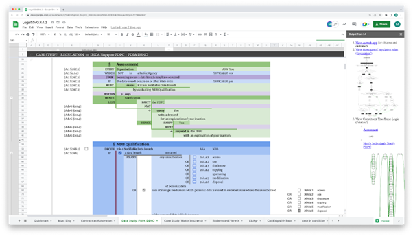

PDPA DBNO Use Case Executive Summary¶
The “PDPA DBNO” use case was conducted in 2021 and ended in 2022.
First deliverable¶
The first deliverable in the use case is: A representation of all relevant Laws as identified for the use-case in machine-readable form in the L4 language developed by CCLAW.
Per that deliverable, section First deliverable of this document provides a link to the Google Spreadsheet containing a representation of all relevant Laws as identified for the use-case in machine-readable form in the L4 language developed by CCLAW. The representation is also attached in CSV, XLSX, and PDF file formats.
The encoding of the PDPA DBNO legislation and regulations is documented directly in the L4 spreadsheet available at https://docs.google.com/spreadsheets/d/1leBCZhgDsn-Abg2H_OINGGv-8Gpf9mzuX1RR56v0Sss/edit#gid=1779650637
A screenshot of the encoding is seen in the figure below.
Second deliverable¶
The second deliverable in the use case is:
A web-based self-assessment tool for data breach notifications. The intended user of the self-assessment tool is representing an organisation in making an assessment of a data breach, and is assumed to have the relevant information on hand to answer the questions. This tool will be delivered in the form of source code with operating instructions. The user interface of the Deliverables will be on a minimum-viable level commensurate with a POC, with no design or front-end elements.
Per that deliverable, section Second deliverable of this document provides explanatory documentation and operating instructions for the web-based self-assessment tool for data breach notifications (“Web Tool”). These instructions provide a high-level overview of the end-user-facing aspects of the Web Tool.
Sections Installation and setup instructions of the Web Tool, Installation and setup instructions of the Google Sheets App, and Installations to compile an edited Natural L4 Spreadsheet of this document provide internal documentation for the above components, and give links to more detailed system documentation available in Github. These operating instructions include directions for bringing up a server hosting the L4 backend itself, including the components that together generate and hot-reload a version of the Web Tool. Section Security Considerations discusses security considerations according to RFC3552 (BCP72).